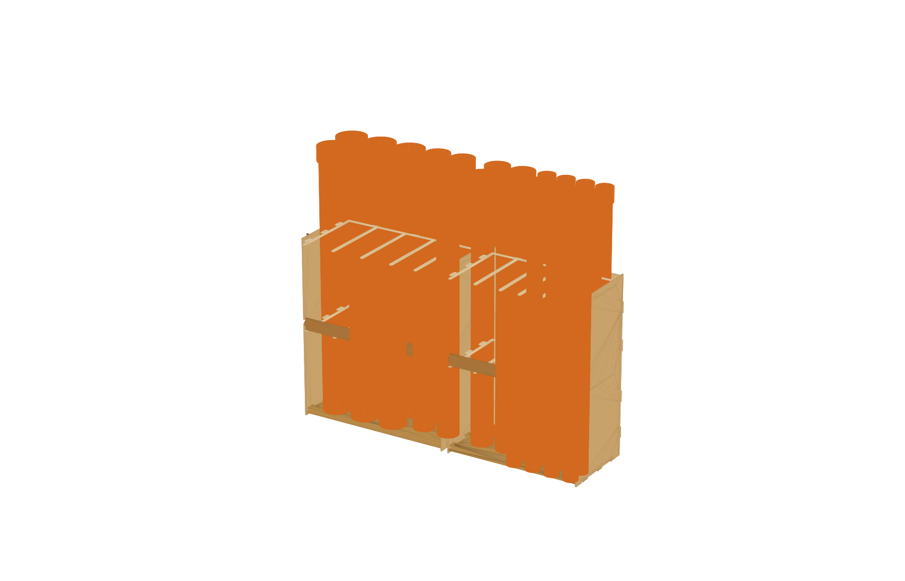

LOKÁTORA 10 mm-es alsó lemez furataiban ülnek a csövek, így nem csúsznak el.
FÉSŰKét, elölről nyitott vezetőfésű 650 és 1300 mm magasan. A cső elölről becsúszik, oldalra nem dől ki.
GUMIKÖTÉLKeresztben feszül minden fésű elején, így a cső előre sem tud kidőlni.
MODULA (1170 mm) és B (1054 mm) modul, 6 db M8 csavarral összefogva, falhoz rögzítve.

ÖSSZEÁLLÍTÁS / 30 CSŐVEL
03 / VIDEÓ
A projekt 2 percben.
A témától a 3D modellen át a lézervágásig, narrációval. Kódból renderelt videó: Remotion és HyperFrames, a 3D modell animációjával és narrációval.
VIDEÓ KÉSZÜL
A kész videó ide kerül fel.
04 / SÁVKIOSZTÁS
Minden csőnek saját helye van.
A cső DN-mérete / KG külső átmérő: DN100 = Ø110 · DN150 = Ø160 · DN200 = Ø200 mm (forrás: idomok.hu, KG cső). A tokátmérők becsültek, vágás előtt mérjük.
Hogyan jutottunk el egy egyszerű műhelyproblémától a paraméteres, ütközésvizsgált 3D modellig, a Claude Opus 5.5 segítségével.
00 / KUTATÁS ÉS KÖZÖS TERVEZÉS
Először megnéztük, hogyan csinálják a profik.
Mielőtt egyetlen vonalat húztunk volna, közösen feltérképeztük, milyen eszközökkel és munkafolyamatokkal dolgoznak a tapasztalt tervezők, és mit alkottak már mások hasonló témában.
01 · ESZKÖZPIACProfi munkafolyamatok
Összevetettük a művészi (Blender), a parametrikus (Fusion 360, Onshape) és a kódalapú CAD-et (OpenSCAD, CadQuery), valamint az AI-s 3D-generátorokat. A kódalapú utat választottuk, mert ott az AI a legerősebb.
02 · REFERENCIÁKMások munkái
Átnéztük nyílt forráskódú skillgyűjtemények (pl. claudedesignskills) Three.js- és webes 3D-mintáit, valamint műhelyes csőtárolók megoldásait.
03 · ADATOKValós méretek
A KG csövek átmérőit és szálhosszait a gyártói katalógusból vettük, a helyet lemértük: 230 × 60 cm, legfeljebb 70 cm.
04 · DIZÁJNVizuális irány
Weboldalhoz a SpaceX letisztult, mérnöki stílusát vettük alapul, márkához a saját Product Team logónkat és az előző projektünk elemeit.
AI-STACK
Skillek, MCP, Opus 5.5.
A projekt minden lépését a Claude Opus 5.5 modellel, Claude Code-ban végeztük. A képességeit skillekkel és MCP-szerverekkel bővítettük.
Átnéztük a skill- és pluginkatalógusokat és a claudedesignskills gyűjteményt. A webes 3D-hez és a felülettervezéshez belőlük vettünk mintákat.
MCPMCP-szerverek
MCP-regiszter a CAD-kapcsolat kereséséhez, munkamenet-MCP a párhuzamos fülek összehangolásához, böngésző-MCP az oldal élő teszteléséhez.
T+00 · KIINDULÁS
A feladat megfogalmazása
„Szükségünk van egy PVC csőtartóra a műhelyünkbe. 230 cm hosszú és max. 70, de inkább 60 cm széles tér áll rendelkezésre. DN100, DN150 és DN200-as csöveket akarunk ott tárolni […] fából, lézervágással.”
A csőméreteket az idomok.hu KG cső oldaláról vettük: Ø110 / 160 / 200 mm, 0,5–5 m-es szálhosszok.
T+01 · DÖNTÉSEK
Claude kérdezett, mi döntöttünk
TÁJOLÁSFüggőleges
CSŐHOSSZ2 m
MENNYISÉGAmi kifér
LEMEZ10 + 6 mm
T+02 · ELAKADÁS
Nem volt Fusion MCP
Sem a connector-regiszterben, sem a skillek között nem volt Fusion-kapcsolat. Megoldás: Claude Python-generátort írt, ami közvetlenül készít DXF-et és 3D-t. Mellé egy Fusion 360 szkriptet is, ami a Fusionben natívan felépíti ugyanazt a modellt.
T+03 · ELAKADÁS
Az 1400 mm-es tábla korlátoz
A 2300 mm-es hossz nem fér ki egy táblából. Megoldás: két modul (1170 + 1054 mm), M8 csavarokkal összefogva.
T+04 · ITERÁCIÓ
Tokkal le vagy fel?
Tokkal lefelé a lokátorfuratok túl nagyok lettek volna, és a DN100-ból csak 3 fért volna egy sávba. Tokkal felfelé a furat a cső átmérőjéhez igazodik, a tok a felső fésű fölé kerül. Így 30 cső fér el.
T+05 · ELLENŐRZÉS
3D ütközésvizsgálat minden alkatrészpárra
A generátor minden futáskor ellenőrzi az összes alkatrészpárt. Próbaként egy 1 mm-es elcsúsztatást is kimutatott, tehát a vizsgálat valóban működik. Eredmény: OK · NINCS ÜTKÖZÉS
T+06 · WEBOLDAL
Párhuzamos munka két fülön
Amíg az egyik Claude-munkamenet a modellen dolgozott, egy másik a weboldalt építette. A második fül az első beszélgetését is el tudta olvasni, így ugyanazokból az adatokból dolgozott. Vizuális referencia: a SpaceX oldala. Mérnöki, sötét, letisztult.
T+07 · VIDEÓ
Kódból renderelt film
A 2 perces videó teljes egészében kódból készült. A HyperFrames (HTML + GSAP) rajzolta meg a probléma és a kutatás kinetikus jeleneteit. A Remotion (React + Three.js) a 3D logót, a körbeforgó csőtárolót a „beúszó” csövekkel, az akadályokat és a vágási táblákat. A narrációt Claude írta, a Mac beépített magyar hangja mondta fel, a feliratokat a kód időzíti.
Egyik lépés sem ment elsőre. Így jutottunk túl a projekt legnehezebb pontjain.
01
AKADÁLY
Nincs kész CAD-kapcsolat
A Fusion 360-hoz nem találtunk közvetlenül használható MCP-kapcsolatot.
MEGOLDÁS
Kódból épülő modell
Az AI paraméteres Python-generátort írt, ami DXF-et és 3D-t készít, mellé pedig egy Fusion-szkriptet, ami ugyanezt natívan felépíti. Egy szám átírásával az egész modell újragenerálható.
02
AKADÁLY
Az 1400 mm-es tábla
A 2300 mm-es hely nem fér ki egyetlen lemezből.
MEGOLDÁS
Két modul
Az állványt két modulra bontottuk (1170 + 1054 mm), amelyeket M8 csavarok fognak össze. Így minden alkatrész kifér egy táblából.
03
AKADÁLY
Kevés cső fért el
Tokkal lefelé túl nagyok lettek a furatok, és a DN100-ból csak 3 fért egy sávba.
MEGOLDÁS
Tokkal felfelé
Megfordítottuk a csöveket: a furat a csőhöz igazodik, a tok a felső fésű fölé kerül. Az eredmény: 30 cső.
04
AKADÁLY
Honnan tudjuk, hogy összeáll?
18 alkatrész, csap-horony kötések. Egy rossz méret a lézervágás után derülne ki.
MEGOLDÁS
Automatikus ütközésvizsgálat
A generátor minden futáskor minden alkatrészpárt ellenőriz. Szándékos 1 mm-es hibával teszteltük, és kimutatta.
05
AKADÁLY
Egy beszélgetés kevés
A modell és a weboldal párhuzamosan készült, a határidő szoros volt.
MEGOLDÁS
Párhuzamos AI-munkamenetek
Két Claude-munkamenet dolgozott egyszerre. A weboldalas MCP-n keresztül elolvasta a tervezős beszélgetését, és ugyanazokból az adatokból dolgozott.
06
AKADÁLY
Fekete modell a weben
A 3D-néző az állványt teljesen feketén mutatta.
MEGOLDÁS
Hibakeresés a fájlban
Az AI megvizsgálta a GLB-fájl belsejét, és rájött, hogy hiányoznak a felületi normálok. Most betöltéskor számolja ki őket.
07
AKADÁLY
Feltöltés kódolás nélkül
Nem programozunk, és a gépen nem volt GitHub-hozzáférés.
MEGOLDÁS
Egy kód, egy kattintás
Az AI letöltötte és ellenőrizte a GitHub hivatalos eszközét. Nekünk csak egy egyszeri kódot kellett jóváhagynunk a böngészőben, a feltöltés és az élesítés automatikusan történt.
08
AKADÁLY
Videó ffmpeg nélkül
A gépen nem volt Node.js és ffmpeg. A Remotionnel érkező ffmpegből pedig hiányzott egy szűrő, amit a HyperFrames használ.
MEGOLDÁS
Képkockákból videó
A HyperFrames képkockákat renderelt, ezekből a Remotion saját ffmpegje fűzte össze a videót. Minden eszköz a projektmappában fut, a rendszerre nem telepítettünk semmit.
Valós tokátmérő (becsült: 128 / 183 / 228 mm) és lemezvastagság (gyakran 9,6 / 5,7 mm) lemérése, majd újragenerálás.
04
TERVEZETT
Próbavágás
Egy 60 mm-es fül és a horonya. Akkor jó, ha kézzel, kis erővel becsúszik. A CLR ráhagyás alapértéke 0,2 mm.
05
TERVEZETT
Lézervágás
100–150 W-os CO₂ lézer, 1400 × 1400 mm-es asztal. 4 tábla 10 mm-es és 4 tábla 6 mm-es lemez.
06
TERVEZETT
Összeszerelés
Talp és padló → lokátor → bal oldalfal → hátfal és fésűk → jobb oldalfal → T-horony csavarok → a két modul összefogása M8 csavarral.
07
TERVEZETT
Telepítés a műhelyben
Falhoz rögzítés 2 db L-vassal, gumikötél a fésűkre, aztán jöhetnek a csövek.
KÖTŐELEMEK
Ami a lemezeken kívül kell.
Tétel
Db
Hová
M6×30 csavar + anya + alátét
8
padló ↔ oldalfal
M4×25 csavar + anya + alátét
20
fésűk és hátfal ↔ oldalfal
M8×35 csavar + anya + 2 alátét
6
A ↔ B modul összefogása
Facsavar 3,5×16
~20
lokátor rögzítése a padlóhoz alulról
Faragasztó (D3 PVA)
1
talpgerendák, lokátor, fésűfülek
Gumikötél Ø6–8 mm + végzáró
~5 m
előre dőlés elleni biztosítás
L-vas + tipli
2
falhoz rögzítés, borulás ellen
05 / RÓLUNK
Product Team
Közös ötlet. Saját terv. Kis csapat vagyunk, és az AI kihívásban azt mutatjuk meg, hogyan lehet néhány nap alatt valami teljesen újat megtanulni, a 3D tervezéstől a videón át a weboldalig.
01Megtervezni
Valós problémából indulunk, és gyártható 3D modellig jutunk.
02Elmesélni
Rövid videóban mutatjuk meg a folyamatot.
03Megmutatni
Mindent egy helyen, nyíltan: fájlok, napló, tanulságok.